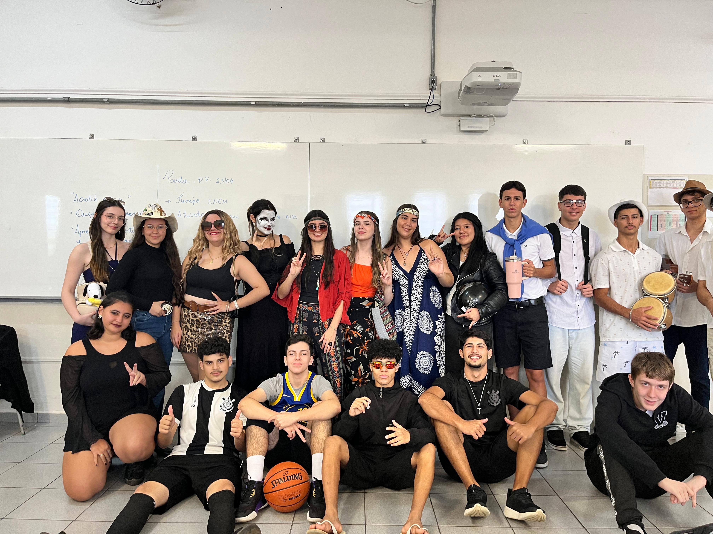
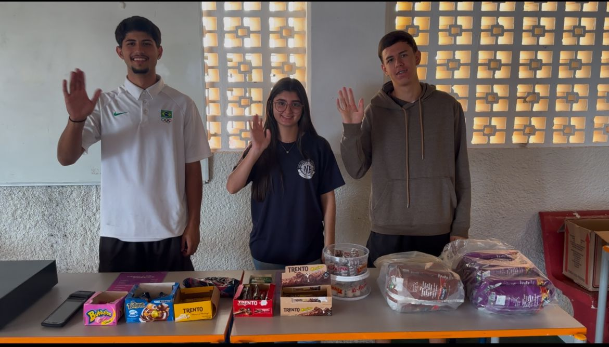
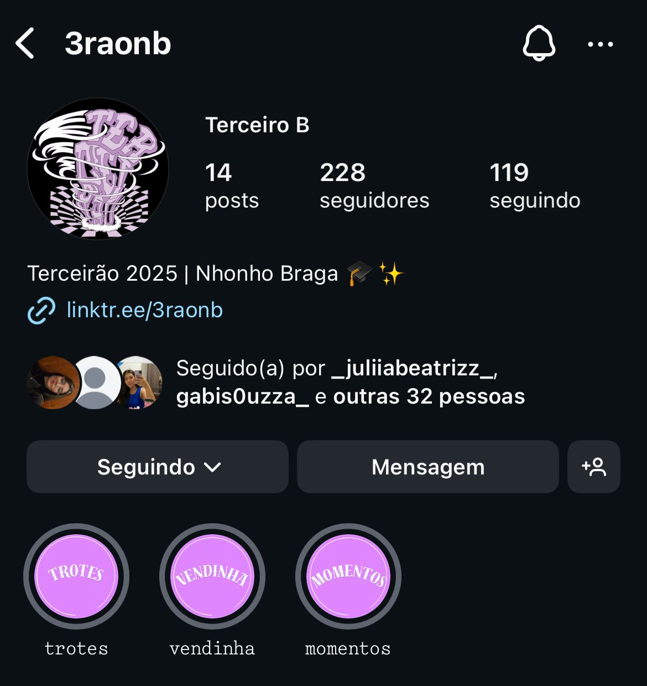

Os Bastidores do Terceirão

Trote Terceirão: Uma Experiência Inesquecível
O trote é uma tradição que marca o começo do terceirão. É uma mistura de diversão, integração e desafios planejados pela turma para criar momentos inesquecíveis. Aqui vou falar sobre como organizamos, o que rolou e o impacto que teve na nossa experiência escolar.

Vendinha do Terceirão: Juntos pela Formatura
A vendinha foi uma iniciativa da turma para arrecadar fundos para a formatura. Organizar a venda dos doces e outros itens, cuidar do caixa e atender os colegas foi uma ótima experiência de trabalho em equipe e responsabilidade.

Instagram Terceirão: Compartilhando Cada Momento
O Instagram da turma foi criado para divulgar as ações, compartilhar momentos importantes e fortalecer nossa comunicação. Através das postagens, mantivemos todos informados e conectados durante o ano.